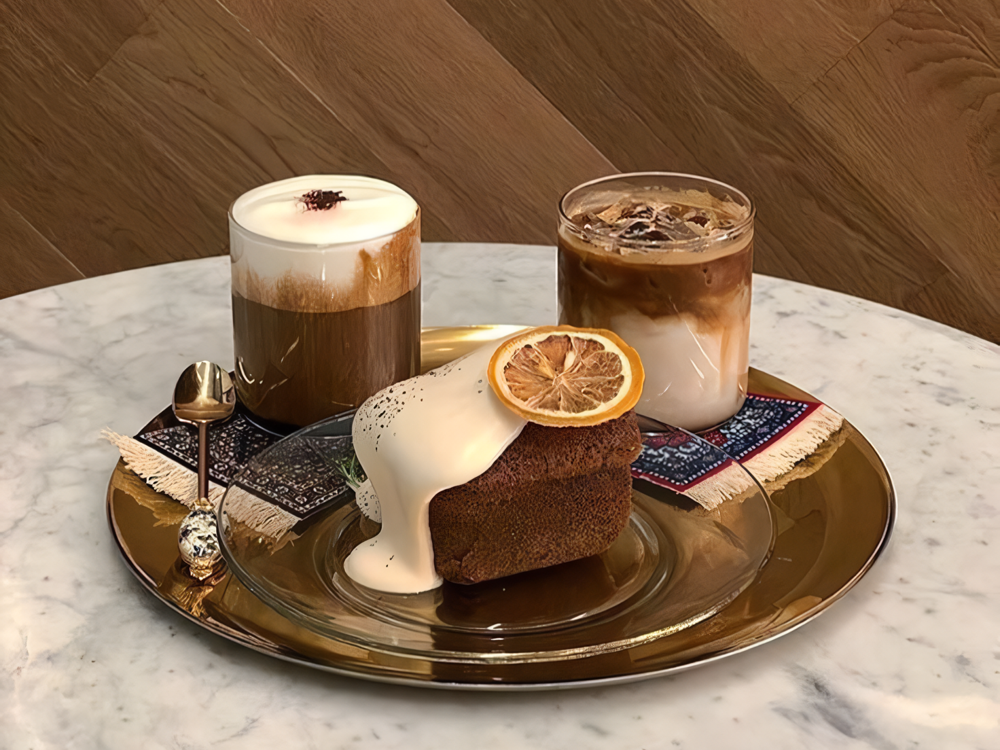

Meekow Selong: Mie kekinian, suasana kekinian.

Nikmati semangkuk mie dengan level pedas sesuai selera, ditemani suasana kafe yang nyaman dan kekinian.
Bakso Pejanggik: Satu mangkuk, seribu kenangan.
Rasakan sensasi bakso urat yang kenyal dengan kuah kaldu yang gurih, di tempat makan yang nyaman dan harga yang ramah di kantong.
Lesehan Elen Sandubaya: Dijamin ketagihan!
Jangan lewatkan kesempatan untuk merasakan sensasi makan lesehan yang tak terlupakan di Lesehan Elen Sandubaya. Kunjungi kami sekarang!
Roti Mokoh Selong: Rasa lokal, kelas dunia.
Rasakan kelezatan roti mokoh yang lembut di dalam dan renyah di luar. Dengan berbagai pilihan rasa, roti mokoh menjadi cemilan favorit keluarga.
KFC Lombok Timur: Pilihan Lezat untuk Selera Modern.
Ayam goreng favoritmu sekarang lebih dekat! Kunjungi KFC Lombok Timur dan nikmati suasana yang nyaman.
Es Teh Selong: Segarnya Selalu Memanggil.
Lebih dari sekadar pelepas dahaga. Antioksidan dari teh membantu menjaga kesehatan tubuh, sementara kesegarannya menyegarkan pikiran.
Mixue Pancor: Segarnya bikin nagih, harganya bikin senyum.
Nikmati kesegaran es krim dan boba berkualitas dengan harga terjangkau. Suasana nyaman, pelayanan ramah, bikin ketagihan!
Ke.temu Coffee, Eatery, & Space: Elegansi dalam sajian.
Nikmati secangkir kopi nikmat di suasana yang nyaman. Tempat yang sempurna untuk bersantai, bekerja, atau bertemu teman.
Warung Rasbani: Lezatnya Ikan Bakar, Hanya di sini.
Bosan dengan menu yang itu-itu aja? Cobain ikan bakar di Warung Rasbani! Dijamin ketagihan dengan bumbunya yang meresap sampai ke tulang.
Gialova: Setiap Gigitan dan Sedutan, Sebuah Karya Seni.
Perpaduan sempurna antara manis dan pahit, lembut dan kuat. Rasakan harmoni rasa dalam setiap sajian.
Kava: Kopi Segar, Makanan Lezat, Setiap Hari.
Bosan dengan rutinitas? Datang ke Kava! Nikmati kopi segar dan makanan lezat yang bikin hari-harimu lebih berwarna.
The Hungry Sushi Selong: Sushi Segar, Rasa Maksimal.
Ingin menikmati sushi lezat tanpa harus jauh-jauh? Kunjungi The Hungry Sushi Selong. Kami menawarkan berbagai macam sushi dengan cita rasa yang tak tertandingi.
ORIEL CHICKEN: Everyday is Fried Chicken Day.
Tempat yang pas untuk menikmati ayam goreng renyah, es krim dengan berbagai rasa, dan teh hangat yang menenangkan.
ROCKET CHICKEN: Meluncur ke Puncak Kelezatan Ayam!
Dengan bumbu rahasia yang lezat dan daging ayam yang berkualitas, setiap gigitan akan membuatmu ketagihan.
Miejotos: Satu suapan, sejuta rasa pedas!
Pecahkan rekor pedasmu! Rasakan sensasi pedas yang menari-nari di lidahmu dengan setiap suapan. Kuah kental nan pedasnya dijamin bikin kamu ketagihan dan berkeringat!
Kebab Wijaya 5: Beragam pilihan, satu rasa nikmat!
Dari klasik hingga kekinian, kami punya semua yang kamu cari dalam satu tempat.